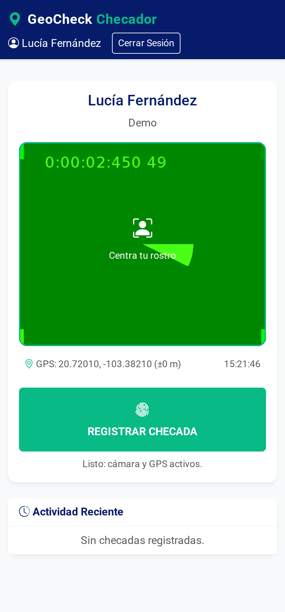
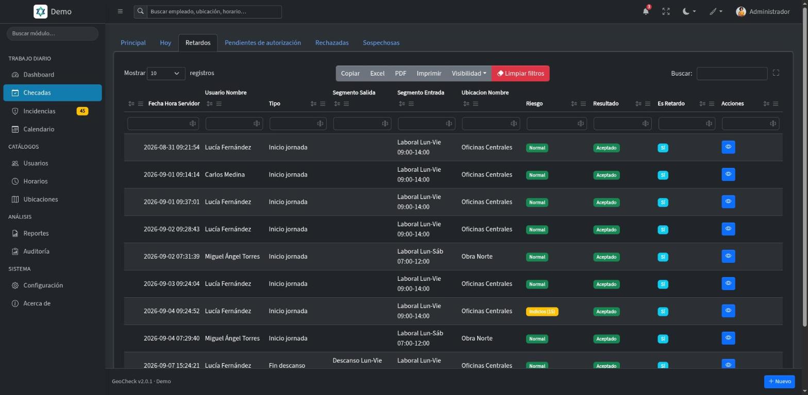
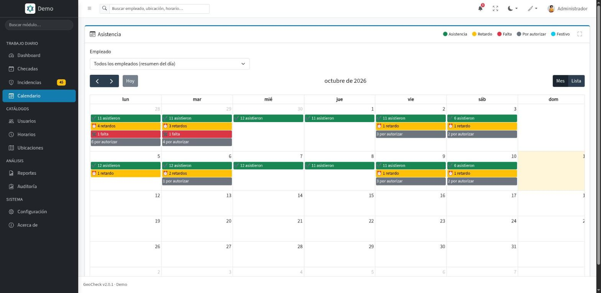
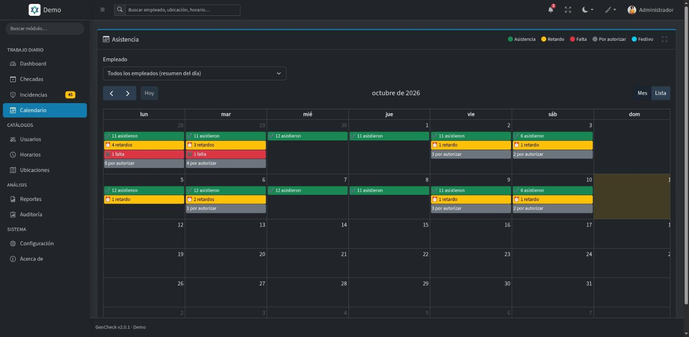
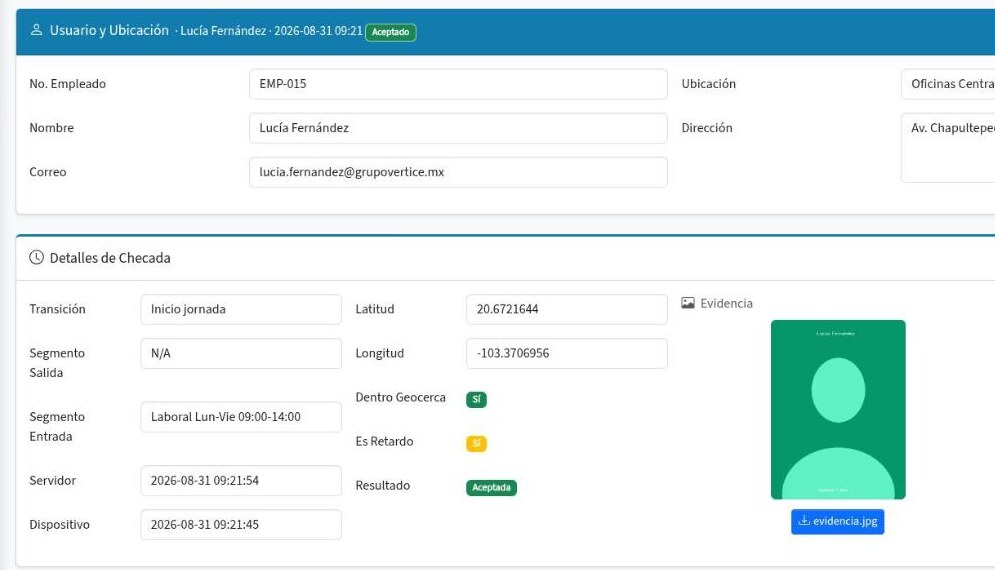
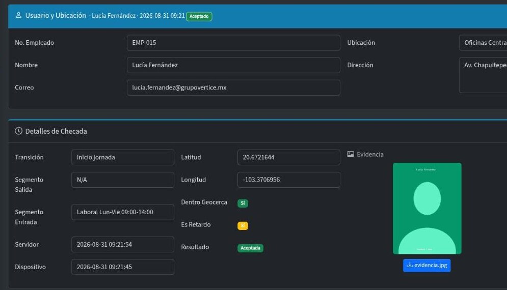

Control de asistencia por ubicación para equipos en campo
Si no está en el sitio, no registra
Cada asistencia se valida con tres comprobaciones obligatorias e inseparables: NIP, GPS contra una geocerca y foto en tiempo real. Sin checador físico. Desde $35 MXN por usuario al mes.
- Sin checador físico
- Funciona en el navegador
- Evidencia no editable
Validación contra geocercasSi no estás dentro del radio permitido, no registras.
Qué es GeoCheck, para quién es y qué resuelve
Qué es
Asistencia validada en tres pasos
Cada registro pasa por NIP, geocerca y foto en tiempo real. Las tres validaciones son obligatorias e inseparables.
GeoCheck es un sistema web: la persona registra desde el navegador de su teléfono y quien supervisa ve cada registro con su hora, su ubicación validada y su fotografía. Con auditoría de cada intento, exitoso o fallido.
Para quién
Equipos que trabajan fuera de la oficina
Obra, ventas externas, servicio técnico, reparto, sucursales y sedes temporales.
Qué resuelve
El checado por compadrazgo
Olvídate de las hojas de papel, de los relojes checadores manipulables y del costo de comprar equipos.
Capacidades
De la hoja de asistencia a la evidencia verificable
Validación en el momento del registro, seguimiento para quien supervisa y reglas claras de privacidad para quien registra.
Tecnología validadora
Tres comprobaciones que no se pueden separar
Cada registro se somete a las tres. Si alguna falla, no hay asistencia.
- Identidad única
Acceso mediante NIP alfanumérico de 4 caracteres.
- Ubicación GPS
Validación contra ubicaciones (geocercas) predefinidas. Si no estás en el radio permitido, no registras.
- Evidencia visual
Foto obligatoria en tiempo real desde la cámara del dispositivo. No se permite subir archivos.

Registro de asistencia desde el navegador del teléfono
Operación del día
El supervisor ve lo que pasó, no lo que le contaron
Cada registro llega con su hora, su ubicación validada y su fotografía. Los intentos fallidos también quedan, con el motivo del rechazo.
- Geocercas por ubicación de trabajo
Define el sitio y el radio permitido para cada equipo o sucursal.
- Evidencia no editable
La foto se toma en el momento; no se pueden subir archivos ya existentes.
- Reportes exportables
Reportes avanzados de la asistencia, listos para exportar.


Checadas con su resultado, su riesgo y su retardo
Seguimiento
Calendario de asistencia, avisos y notas
Asistencias, retardos, faltas e incidencias de cada día en un solo lugar, y la campana te avisa de lo que importa.
- Calendario de asistencia
Asistencias, retardos, faltas e incidencias por autorizar de cada día, en vista de mes, semana o lista.
- Avisos que tú eliges
Incidencias nuevas, retardos, checadas sospechosas, cierre del día y notas; cada usuario decide cuáles recibe.
- Notas en checadas e incidencias
Una aclaración sobre un retardo o lo que falta para autorizar una incidencia queda escrita en el propio registro.


Calendario de asistencia por día
Privacidad y claridad
Lo que GeoCheck no es
Respetamos la privacidad de la persona mientras garantizamos el cumplimiento laboral. Es un sistema de verdad, no un sistema de espionaje.
- No es biometría facial invasiva
La foto es solo evidencia del momento del registro y se guarda 2 años. No creamos bases de datos biométricas ni reconocemos rostros constantemente.
- No es rastreo constante
El GPS solo se activa durante los segundos exactos del registro. No rastreamos movimientos todo el día ni mostramos ubicación en vivo.
- No permite trabajo desde casa
El sistema valida estrictamente la presencia física en el sitio de trabajo asignado.


Detalle de una checada: evidencia y validación de geocerca
Diseñado para el control real
Personal en obra
Valida que los operarios y albañiles están físicamente en el terreno de construcción.
Vendedores externos
Control de visitas a clientes y puntos de venta. Reportes de ruta y presencia.
Técnicos de servicio
Soporte técnico, mantenimiento y reparaciones. Validación en domicilio del cliente.
Logística y reparto
Control de salida y llegada de mercancía en almacenes y puntos de entrega.
Sucursales
Gestión centralizada de múltiples sucursales: control de personal, horarios y reportes por ubicación.
Eventos y servicios temporales
Control de personal en eventos, ferias y sedes temporales; gestión de turnos y presencia por ubicación.
Ver más del sistema
Más del sistema
Búsqueda en todo el sistema
Escribe una persona, una ubicación, un horario o una incidencia en la barra de arriba; solo aparece lo que tú puedes abrir.
Evidencia en grande
La foto de cada checada se abre en un visor a pantalla completa, sin salir del registro.
Imprime como documento
Reportes y checadas salen con el logo y el nombre de tu empresa, sin menús ni botones en el papel.
Apariencia a tu gusto
Tema claro, oscuro o automático, 20 colores de énfasis y un modo compacto para ver más filas.
Mi perfil y ajustes
Tus datos y tu foto, cambio de contraseña, apariencia, avisos y actividad, sin salir de lo que haces.
Manual dentro del sistema
La ayuda se abre en la pantalla donde estás, con buscador.
Por qué GeoCheck
GeoCheck frente a un reloj checador
El reloj de la entrada valida que alguien puso un dedo. No valida quién, ni dónde, ni cuándo de verdad.
La diferencia
Un registro que no se puede acomodar
Cada registro pasa por NIP, geocerca y foto en el momento: sin checado por compadrazgo, sin fotos manipuladas y sin comprar equipos.
- Validación GPS
Fuera de la geocerca no hay registro.
- Evidencia no editable
La foto se toma en el momento; no se admiten archivos de la galería.
- Sin checador físico
Sin costo de comprar equipos: se registra desde el teléfono.
- Auditoría total
Cada intento y cada cambio administrativo quedan registrados con autor y fecha.
- Intentos fallidos a la vista
También quedan, con el motivo del rechazo.
- Reportes exportables
Reportes avanzados de la asistencia, listos para exportar.
Integración con tu operación
GeoCheck se adapta al sitio donde trabaja tu gente, no al revés.
Geocercas por ubicación de trabajo
Defines el sitio y el radio permitido para cada equipo o sucursal, y cada registro se valida contra esa ubicación.
Funciona en el navegador, sin descargas
No requiere descargas de App Store ni Google Play. Las actualizaciones son automáticas e invisibles para el usuario final.
Auditoría total
Se registra cada intento de asistencia, exitoso o fallido, y cualquier cambio hecho por administradores o supervisores desde el panel.
Aviso a quien supervisa
La campana avisa de incidencias nuevas, retardos y checadas sospechosas, y cada usuario decide qué avisos recibe.
La diferencia GeoCheck
No ofrecemos solo un software, ofrecemos una solución completa a tu control de asistencia. Con soporte directo del equipo que lo desarrolla y actualizaciones incluidas, tu inversión evoluciona contigo.
Precios
Un precio por usuario, sin planes
Pagas por cada usuario con cuenta activa, y el precio baja con cada usuario que sumas. Todos incluyen la validación por NIP, GPS y foto, auditoría total, reportes exportables, soporte y las actualizaciones que se publiquen.
Precio por usuario
Desde$35MXN por usuario al mes
Más usuarios, menos pagas por cada uno
- Cada usuario adicional baja 1% el precio de todos tus usuarios.
- Arriba de 50 usuarios, obtienes el descuento máximo de 50%.
- Sin planes ni topes de ubicaciones o administradores. Empleados y administradores cuentan y cuestan igual.
- Al sumar un usuario se cobra al momento la parte proporcional del periodo. Al reducir tus usuarios contratados, el cobro menor rige desde tu siguiente renovación.
- Con el plan anual solo pagas 10 meses, y los otros 2 son gratis.
- Validación NIP, GPS y foto
- Auditoría total detallada
- Soporte y mantenimiento incluidos
- Actualizaciones sin costo adicional
- Sin descargas de App Store ni Google Play
- Precios en pesos mexicanos
Preguntas frecuentes
Lo que más nos preguntan sobre GeoCheck
¿Tienes otra duda? Escríbenos a soporte@alkes.mx.
¿Qué es GeoCheck?
Un sistema web de Alkes para controlar la asistencia por ubicación: cada registro valida identidad por NIP, geolocalización GPS contra una geocerca y una foto tomada en el momento.
¿Cuánto cuesta?
Desde $35 MXN por usuario al mes. Se cobra por usuario con cuenta activa, y cada usuario adicional baja 1% el precio de todos hasta llegar a 50% de descuento arriba de 50 usuarios. Con el plan anual solo pagas 10 meses, y los otros 2 son gratis.
¿Cómo se calcula mi mensualidad?
Todos tus usuarios pagan el mismo precio, que baja con cada usuario que sumas. Con 15 usuarios son 15 × $60.20 = $903 MXN al mes; con 50 usuarios son 50 × $35.70 = $1,785 MXN al mes. La calculadora de la sección de precios te da el total exacto.
¿Qué pasa si agrego o quito usuarios a mitad del periodo?
Al sumar un usuario se cobra al momento la parte proporcional hasta tu próxima factura, y desde la siguiente el precio por usuario se ajusta a tu nuevo total. Desactivar un usuario libera su lugar para otra persona, pero no cambia el cobro: para pagar menos, reduce tus usuarios contratados en Configuración y la reducción rige desde la siguiente renovación; no hay reembolso a mitad del periodo.
¿Hay planes o límites de ubicaciones y administradores?
No. El precio depende solo del número de usuarios; tú decides quién es administrador y qué rol tiene cada persona.
¿Qué valida cada registro de asistencia?
Tres comprobaciones obligatorias e inseparables: NIP alfanumérico de 4 caracteres, ubicación GPS dentro de la geocerca y foto en tiempo real. Si alguna falla, no hay asistencia.
¿Los empleados tienen que descargar una app?
No. GeoCheck funciona en el navegador del teléfono, sin descargas de App Store ni Google Play.
¿Se puede subir una foto de la galería?
No. La foto se toma en el momento desde la cámara del dispositivo y no se permite subir archivos.
¿GeoCheck rastrea a las personas durante el día?
No. El GPS solo se activa durante los segundos exactos del registro; no hay rastreo constante ni ubicación en vivo.
¿Se puede registrar asistencia desde casa?
No. El sistema valida presencia física en el sitio de trabajo asignado: fuera de la geocerca no se registra.
¿Qué pasa con los intentos fallidos?
También quedan registrados, con el motivo del rechazo, igual que cualquier cambio hecho desde el panel por administradores o supervisores.
¿Puedo probarlo?
Sí, con el demo y sus credenciales de prueba.
Confianza
Un equipo con nombre, correo y teléfono
GeoCheck es un producto de Alkes. Nuestro equipo desarrolla, opera y da soporte al mismo sistema.
Sin descargas
Funciona en el navegador del teléfono. Nada que instalar desde App Store ni Google Play.
Auditoría total
Cada intento y cada cambio administrativo quedan registrados con autor y fecha.
Evidencia íntegra
La foto se captura en el momento; no se admiten archivos subidos desde la galería.
Actualizaciones incluidas
Soporte, mantenimiento y nuevas funciones sin costo adicional durante tu periodo.
Soporte del equipo que construye GeoCheck
Nuestro equipo desarrolla, opera y da soporte a GeoCheck de principio a fin. Para soporte técnico, una demostración guiada o un módulo a la medida de tu operación, hablas directamente con el equipo que construye el sistema.
Novedades
El producto se mueve, y queda por escrito
Historial público de versiones: lo que se entregó, cuándo y qué cambia en tu día a día.
v2.3.0 Incidencias resueltas, definitivas 26 oct 2026
- Solo lo pendiente se atiende
Completar la checada, autorizar o rechazar solo se ofrece en incidencias pendientes. Una incidencia autorizada o rechazada queda como está.
v2.2.1 Fotos del checador más ligeras y guardadas 24 meses 24 oct 2026
- Fotos más ligeras
La foto de cada checada pesa menos y se le quitan los datos ocultos del celular, como la ubicación de la cámara.
- 24 meses de evidencia
Las fotos del checador se guardan 24 meses; después, la checada se conserva y su ficha indica que la foto venció.
- Aviso de checada corregido
El mensaje «Checada registrada» ya no muestra etiquetas raras.
v2.2.0 Mi nube: tus archivos en un solo lugar 23 oct 2026
- Mi nube
En el menú de tu nombre, después de «Mi perfil y ajustes»: todos tus archivos, para verlos, descargarlos, borrarlos o subir archivos sueltos. Cada quien ve solo lo suyo.
- Tu espacio, siempre a la vista
Cada usuario tiene su propio espacio y una barra te dice cuánto llevas usado, con aviso cuando se está llenando.
- Fotos del checador aparte
Las fotos de las checadas no ocupan tu espacio ni salen en Mi nube; solo un administrador las puede borrar.
- Archivos mejor protegidos
Cada archivo se revisa por su contenido real y solo se descarga con permiso.
v2.1.7 Captura más a prueba de errores 17 oct 2026
- Fecha de ingreso razonable
La fecha de ingreso de un usuario debe estar entre 1950 y un año adelante.
- Incidencias con fechas reales
Las fechas de una incidencia deben ser válidas y no estar en el futuro.
v2.1.6 El visor de PDF funciona en el celular 16 oct 2026
- PDF dentro del mismo visor
En Chrome para Android y otros navegadores sin visor propio, el PDF ahora se ve en el modal, página por página, con su botón Descargar.
v2.1.5 «Recuérdame» en hasta 5 equipos 16 oct 2026
- Cada equipo se recuerda por separado
Puedes recordar hasta 5 equipos a la vez; al recordar el sexto se olvida el que lleva más tiempo sin usarse.
- Lista en Mi perfil
En Mi perfil › Seguridad ves tus equipos recordados con navegador, sistema, IP y último uso, y puedes olvidar el que quieras.
- Más seguro
Cerrar sesión olvida solo ese equipo, y cambiar la contraseña o dar de baja a un usuario olvida sus equipos recordados. Cada persona inicia sesión una vez más y vuelve a marcar «Recordarme».
v2.1.4 Correos de recuperación funcionando 16 oct 2026
- Se corrigió el envío de correos
Se resolvió un error que impedía mandar el código de recuperación de contraseña y los correos de documentos.
v2.1.3 Recuperar contraseña y acceso desde el celular 16 oct 2026
- Recupera tu contraseña desde el acceso
Escribes tu correo, recibes un código de 6 dígitos que vence a los 15 minutos y con él pones tu contraseña nueva.
- Acceso cómodo en el celular
La pantalla de acceso se ajusta a cualquier tamaño, en vertical y en horizontal, sin hacer scroll ni tapar la tarjeta con el teclado.
v2.1.2 Tablas con el mismo control de orden 15 oct 2026
- Un solo control de orden
Las tablas de reportes, festivos y el modal de selección ordenan con el mismo menú que el resto.
v2.1.1 Botones iguales y en el mismo orden en todos los módulos 15 oct 2026
- Cada botón, siempre del mismo color
Guardar y Borrador en azul, Procesar en verde, Cancelar y Eliminar en rojo, todas las autorizaciones en amarillo, Imprimir y Regresar en gris. Los mismos colores en todos los módulos.
- Siempre en el mismo orden
De izquierda a derecha, por relevancia: primero guardar, luego las acciones, las cancelaciones y las autorizaciones. Al extremo derecho van Enviar, Información y Regresar.
- Sin menús escondidos
Todos los botones están a la vista, uno por uno, rellenos y con su ícono. Ya no hay botones de solo contorno ni menús «Más».
- Mejor en el celular
En pantallas chicas los botones muestran solo su ícono para que quepan, y la acción principal conserva su texto.
- El botón de correo, más corto
Ahora se llama simplemente Enviar.
v2.1.0 Envía fichas de empleado y de checada por correo 15 oct 2026
- De la checada al correo del empleado
Con el botón Enviar mandas la ficha de una checada o la ficha de un empleado. El PDF va como archivo adjunto.
- Revisas antes de enviar
Una ventana te muestra el correo del empleado, el asunto y el mensaje para que los ajustes, y eliges qué secciones incluye el PDF.
- Con el nombre de tu empresa
El correo sale a nombre de tu empresa, con tu firma y tu pie. Las respuestas llegan al correo que elijas.
- Con tu propio servidor de correo
Si lo prefieres, configura el servidor de correo de tu empresa para que los envíos salgan desde tu dominio y sin el límite de uso justo.
v2.0.4 Formularios más claros, con ícono en cada campo 14 oct 2026
- Un ícono en cada campo
Cada dato que capturas lleva su ícono al lado izquierdo, para reconocer de un vistazo qué se pide.
- Nombre y campo en la misma línea
El nombre del campo queda a la izquierda y el campo a su derecha, en todos los formularios y ventanas.
- Tarjetas con título e ícono
Cada bloque de una pantalla se identifica con su ícono y su título.
- Configuración y datos para facturar con el mismo orden
Las pantallas de Configuración, suscripción y datos para facturar siguen el mismo acomodo que el resto del sistema.
v2.0.3 Fichas de empleado y de checada en PDF 14 oct 2026
- Ficha del empleado
Un resumen de sus últimos 30 días y, si quieres, sus últimas checadas, incidencias, ubicaciones y horarios asignados.
- Ficha de la checada
Hora del servidor y del dispositivo, geocerca, precisión del GPS, riesgo y resultado, con sus incidencias, evidencias y notas.
- Tú eliges qué incluye
El botón Imprimir, al pie del formulario, abre una ventana donde marcas las secciones y ves cuántos elementos tiene cada una. Recuerda tu última elección.
- Se ve sin salir de la pantalla
El PDF se abre en una ventana, con la opción de descargarlo. Arriba lleva el logo y el nombre de tu empresa; GeoCheck aparece solo como un crédito discreto al pie.
- La checada, con Regresar
El formulario de una checada ahora tiene Imprimir y Regresar al pie.
v2.0.2 Cobro por usuario, cupo editable y roles que se suman 13 oct 2026
- Tú decides cuántos usuarios contratas
Ya no hay planes ni topes por tipo de usuario. Contratas un número de usuarios y cada persona activa ocupa un lugar, sea cual sea su rol.
- Cambia tu cupo desde Configuración
El administrador sube o baja el total de varios en varios y ve la vista previa del cobro antes de confirmar. Al subir, se cobra al momento la parte proporcional; al bajar, el cambio se aplica en la renovación.
- Aviso cuando el cupo se llena
Dar de alta o reactivar a alguien con el cupo lleno no genera ningún cobro: el sistema avisa y tú decides si amplías.
- Roles que se suman
Una persona puede tener varios roles. El checador es para quien tiene el rol Empleado.
- Sin topes de ubicaciones ni de administradores
El cupo se mide solo por usuarios, empleados y administradores por igual.
- Datos para facturar
En Configuración puedes capturar, si los necesitas, los datos fiscales de tu suscripción.
v2.0.1 La misma forma de trabajar en GeoCheck, Mantis y SmartPend 8 oct 2026
Resumen de la versión
- Tarjetas iguales en los tres sistemas
Las tarjetas secundarias llevan la misma sombra que en Mantis y SmartPend.
- Maximizar junto al buscador
En los listados, el botón para ver la tabla a pantalla completa está a un lado de Buscar.
v2.0.0 Interfaz renovada, calendario de asistencia, avisos y notas 8 oct 2026
Resumen de la versión
- Interfaz renovada de punta a punta
El panel de GeoCheck estrena diseño completo. El encabezado, el menú y el pie se quedan fijos mientras trabajas, y se usa igual de cómodo en el celular que en la computadora. Tema claro, oscuro o automático, 20 colores de énfasis y un modo compacto para ver más filas.
- Calendario de asistencia
Asistencias, retardos, faltas e incidencias por autorizar de cada día, en vista de mes, semana o lista. Por persona, su entrada y su salida de cada día. Un clic lleva al listado.
- Avisos en la campana, los que tú elijas
Te avisa de incidencias nuevas, retardos, checadas sospechosas, el cierre del día, la resolución de una incidencia y las notas. Un interruptor por tipo de aviso decide cuáles recibes.
- Notas en checadas e incidencias
Una aclaración sobre un retardo o lo que falta para autorizar una incidencia queda escrita en el propio registro, como una conversación.
- La evidencia de cada checada, en grande
La foto se abre en un visor a pantalla completa, sin salir del registro.
- Reportes y checadas impresos como documento
Con el logo y el nombre de tu empresa, sin menús ni botones en el papel.
- Búsqueda en todo el sistema
Escribe una persona, una ubicación, un horario o una incidencia en la barra de arriba, desde cualquier pantalla. Solo aparece lo que tú puedes abrir.
- Un dashboard que dice cómo va el día
Checadas y retardos de hoy, incidencias por autorizar y ubicaciones por revisar, cada uno con su acceso directo. Tres barras miden quién ya checó, cuántas checadas caen dentro de la geocerca y la puntualidad del mes.
- Mi perfil y ajustes, sin salir de lo que haces
Desde tu nombre, arriba a la derecha: tus datos y tu foto, el cambio de contraseña, la apariencia, tus avisos y tu actividad.
- Manual de usuario dentro del sistema
Se abre desde el menú de tu nombre, en la sección de la pantalla donde estás, con buscador.
- Errores claros en los formularios
Si un dato falta o no es válido, el campo se marca en rojo con el mensaje debajo.
- Más seguridad
El NIP de cada persona ya no queda escrito en ninguna bitácora, y se reforzó la protección de las sesiones.
Impacto en tu día a día
- Checar se hace igual
El checador, la ubicación y la foto funcionan como siempre. No hay que reconfigurar nada.
- Cerrar sesión cambia de lugar
Ahora está en el menú de tu nombre, arriba a la derecha.
v1.0.0 Primera versión de GeoCheck jun 2026
- Checador con ubicación
El empleado marca su entrada y salida desde el celular; el sistema valida su GPS contra la geocerca de la ubicación.
- Panel de administración
Usuarios, ubicaciones, horarios, checadas e incidencias en un solo lugar.
- Varias empresas
Cada empresa ve solo su información.
- Roles
Administrador, supervisor y empleado: el empleado solo usa el checador.
En camino
Lo que sigue
Reconocimiento facial
Validación opcional mediante reconocimiento facial para evitar el uso del NIP por terceros.
Ubicaciones por zonas
Gestión avanzada para empresas con múltiples sub-zonas dentro de una misma ubicación general.
Modo offline
Capacidad para registrar asistencia sin conexión a internet y sincronizar al regresar.
Las fechas, el orden y la disponibilidad de esta funcionalidad están sujetos a cambios sin previo aviso.
Empieza hoy
Empieza a validar la asistencia de verdad
Entra al demo con las credenciales de prueba, o contrata por usuario y registra la primera asistencia validada el mismo día.
Contacto
Hablemos
Soporte técnico, dudas comerciales o módulos a la medida. Tu mensaje llega a una bandeja real.
Ecosistema Alkes
GeoCheck no está solo
Cinco productos desarrollados, alojados y operados por Alkes. Mismo soporte, misma casa.